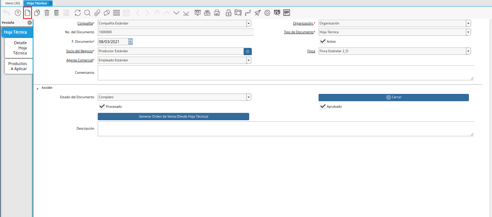

Hoja Técnica
Ubique y seleccione en el menú de ADempiere, la carpeta “Gestión de Asistencia al Agricultor”, luego seleccione la ventana “Hoja Técnica”.
Imagen 1. Menú de ADempiere

Podrá visualizar la ventana “Hoja Técnica”, con diferentes registros de hojas técnicas en ADempiere.
Imagen 2. Ventana Hoja Técnica
Seleccione el icono “Registro Nuevo”, ubicado en la barra de herramientas de ADempiere.

Imagen 3. Icono Registro Nuevo
Seleccione en el campo “Organización”, la organización para la cual se encuentra realizando el registro de hoja técnica.
Imagen 4. Campo Organización
Seleccione el tipo de documento a generar en el campo “Tipo de Documento Destino”, la selección de este define el comportamiento del documento que se esta elaborando, dicho comportamiento se encuentra explicado en el documento Tipo de Documento elaborado por ERPyA.
Imagen 5. Campo Tipo de Documento
Introduzca en el campo “F. Documento”, la fecha en la que se encuentra realizando la hoja técnica.
Imagen 6. Campo F. Documento
Seleccione en el campo “Socio del Negocio”, el productor correspondiente a la hoja técnica que se encuentra realizando.
Imagen 7. Campo Socio del Negocio
Seleccione en el campo “Finca”, la finca correspondiente a la hoja técnica que se encuentra realizando.
Imagen 8. Campo Finca
Seleccione en el campo “Agente Comercial”, el agente comercial correspondiente a la hoja técnica que se encuentra realizando.
Imagen 9. Campo Agente Comercial
Introduzca en el campo “Comentarios”, los comentarios o información adicional correspondiente a la hoja técnica que se encuentra realizando.
Imagen 10. Campo Comentarios
Seleccione el icono “Guardar Cambios”, ubicado en la barra de herramientas de ADempiere.
Imagen 11. Icono Guardar Cambios
Seleccione la pestaña “Detalle de Hoja Técnica” y proceda al llenado de los campos correspondientes.
Imagen 12. Pestaña Detalle de Hoja Técnica

Seleccione en el campo “Cultivo”, el cultivo correspondiente al registro que se encuentra realizando.
Imagen 13. Campo Cultivo

Seleccione en el campo “Etapa del Cultivo”, la etapa del cultivo correspondiente al registro que se encuentra realizando.
Imagen 14. Campo Etapa del Cultivo

Seleccione en el campo “Tipo de Observación”, el tipo de observación correspondiente al registro que se encuentra realizando.
Imagen 15. Campo Tipo de Observación

Introduzca en el campo “Comentarios”, el comentario correspondientes al registro que se encuentra realizando.
Imagen 16. Campo Comentarios

Introduzca en el campo “Área Efectiva”, el área efectiva correspondiente al registro que se encuentra realizando.
Imagen 17. Campo Área Efectiva

Seleccione en el campo “Estado”, el estado en el que se encuentra el cultivo actualmente.
Imagen 18. Campo Estado

Seleccione en el campo “Fecha de Inicio de Siembra”, la fecha de inicio de la siembra correspondiente al registro que se encuentra realizando.
Imagen 19. Campo Fecha de Inicio de Siembra

Seleccione en el campo “Fecha Final de Siembra”, la fecha final de la siembra correspondiente al registro que se encuentra realizando.
Imagen 20. Campo Fecha Final de Siembra

Seleccione en el campo “Fecha de Inicio de Cosecha”, la fecha de inicio de la cosecha correspondiente al registro que se encuentra realizando.
Imagen 21. Campo Fecha de Inicio de Cosecha

Seleccione en el campo “Fecha Final de Cosecha”, la fecha final de la cosecha correspondiente al registro que se encuentra realizando.
Imagen 22. Campo Fech Final de Cosecha

Introduzca en el campo “Rendimiento Estimado”, el rendimiento estimado correspondiente al registro que se encuentra realizando.
Imagen 23. Campo Rendimiento Estimado
Note
El valor de este campo corresponde al rendimiento esperado por área. Es decir, que el valor ingresado es multiplicado por el valor del campo “Área Efectiva”.

Podrá visualizar en el campo “Cantidad Estimada”, la cantidad estimada correspondiente al registro que se encuentra realizando.
Imagen 24. Campo Cantidad Estimada
Note
El valor de este campo se obtiene de manera automática de la multiplicación del campo “Rendimiento Esperado”, por el campo “Área Efectiva”.

Seleccione en el campo “Acuerdo Financiero”, el acuerdo financiero correspondiente al registro que se encuentra realizando.
Imagen 25. Campo Acuerdo Financiero

Seleccione icono “Guardar Cambios”, ubicado en la barra de herramientas de ADempiere.
Imagen 26. Icono Guardar Cambios
Seleccione la pestaña “Productos a Aplicar” y proceda al llenado de los campos correspondientes.
Imagen 27. Pestaña Productos a Aplicar

Seleccione en la pestaña “Producto”, el producto a aplicar al rubro.
Imagen 28. Campo Producto

Seleccione en el campo “Detalle de Hoja Técnica”, el detalle de hoja técnica correspondiente al registro que se encuentra realizando.
Imagen 29. Campo Detalle de Hoja Técnica

Seleccione en el campo “Desde Fecha”, la fecha de inicio del rango de fecha en la cual debe ser aplicado el producto al rubro.
Imagen 30. Campo Desde Fecha

Seleccione en el campo “A Fecha”, la fecha final del rango de fecha en la cual debe ser aplicado el producto al rubro.
Imagen 31. Campo A Fecha

Tilde el check “Aplicado”, para indicar que el producto ya fue aplicado al rubro.
Imagen 32. Check Aplicado

Seleccione en el campo “Dosis por Área”, la cantidad de dosis del producto por área a aplicar al rubro.
Imagen 33. Campo Dosis por Área

En el campo “Cantidad”, podrá visualizar la cantidad de dosis del producto a ordenar.
Imagen 34. Campo Cantidad

Seleccione en el campo “UM”, la unidad de medida del producto a ordenar.
Imagen 35. Campo UM

Seleccione en el campo “Almacén”, el almacén para el producto a ordenar.
Imagen 36. Campo Almacén

Introduzca en el campo “Comentarios”, los comentarios correspondientes al registro que se encuentra realizando.
Imagen 37. Campo Comentarios

Seleccione el icono “Guardar Cambios”, ubicado en la barra de herramientas de ADempiere.
Imagen 38. Icono Guardar Cambios
Regrese a la pestaña principal “Hoja Técnica” y seleccione la opción “Completar”.
Imagen 39. Pestaña Principal Hoja Técnica y Opción Completar

Seleccione la acción “Completar” y la opción “OK”.
Imagen 40. Acción Completar y Opción OK